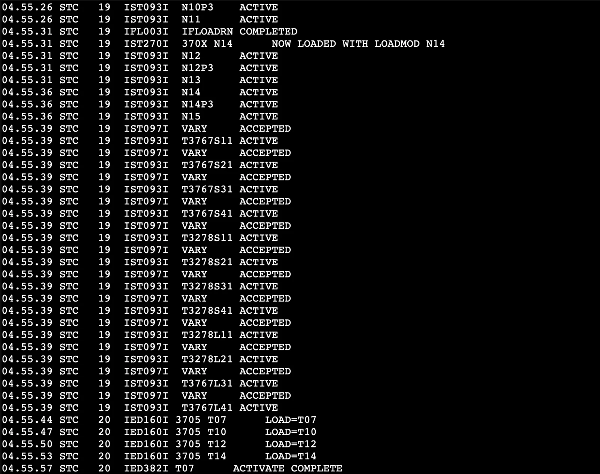
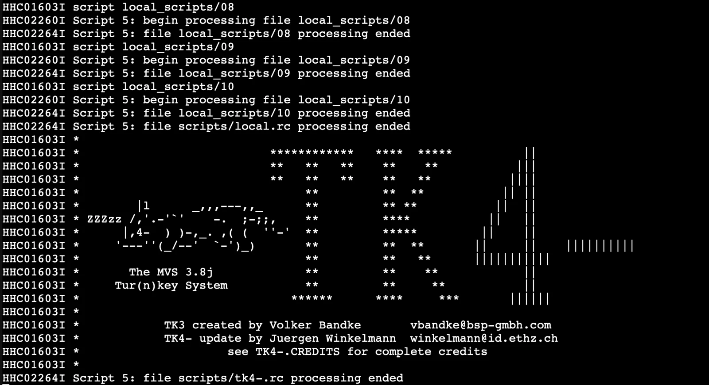
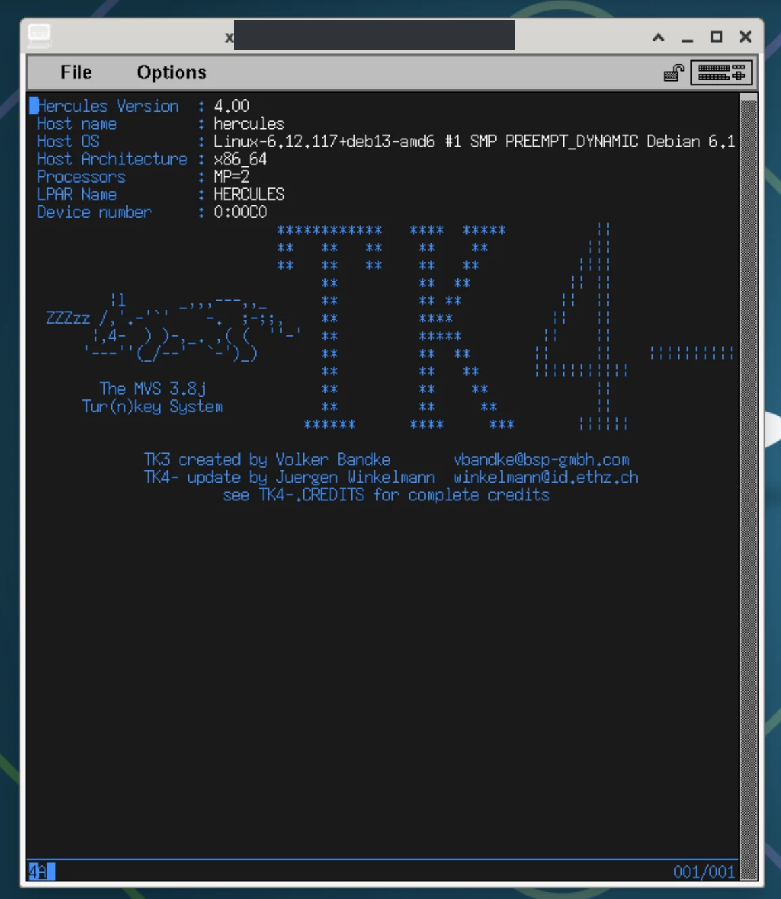
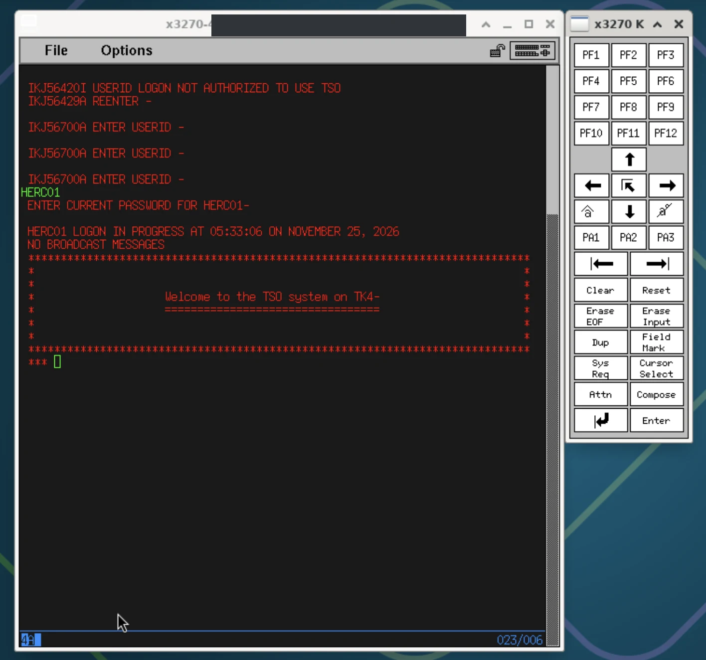
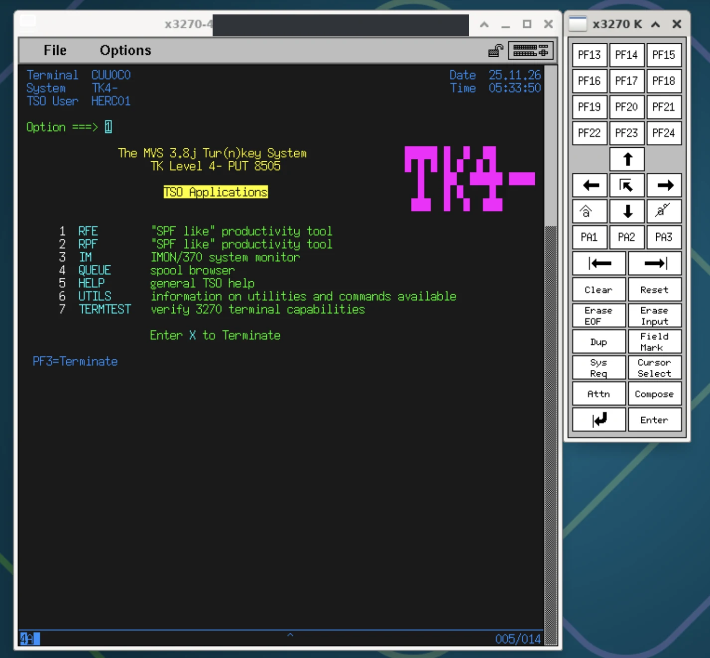
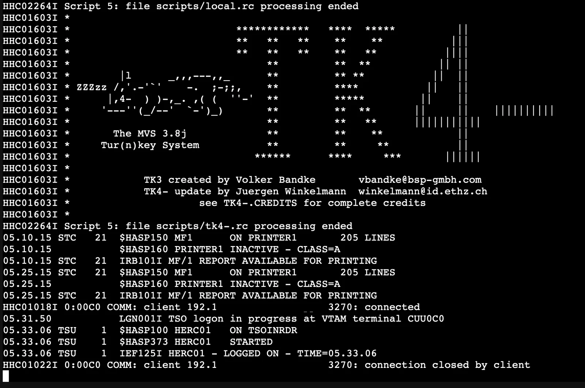

Antes do MVS: OS/360 (1972)
1. Um mainframe dentro do laboratório
Ao contrário dos computadores pessoais, o mainframe concentra o processamento e permite o acesso por vários terminais. O IBM System/370 surgiu em 1970; o MVS em 1974. A versão MVS 3.8j utilizada neste laboratório corresponde a 1981. O nível de manutenção 8505 e a distribuição moderna TK4- são distintos da data do sistema original.
O objetivo é reconstruir a experiência de operador e programador: iniciar o sistema, autenticar utilizadores, submeter trabalhos e experimentar linguagens históricas.
Proxmox VE
└── Debian 13 minimal (SSH)
└── Hercules 4.00 / System/370
└── MVS 3.8j TK4-
├── JES2 — gestão de trabalhos
├── VTAM — comunicações
└── TSO — acesso interativo
↔ x3270 (TCP 3270)2. Preparar o Debian no Proxmox
Foi criada uma VM dedicada, sem ambiente gráfico, administrada por SSH. O anfitrião identifica-se como hercules, arquitetura x86_64, kernel 6.12.117 e dois processadores reportados pelo Hercules.
apt update
apt upgrade -y
apt install htop tmux screen vim nano wget curl git unzip p7zip-full net-tools tree
apt install qemu-guest-agentO QEMU Guest Agent foi instalado e ativado na configuração da VM, para integração com o Proxmox. O terminal gráfico é executado noutra máquina.
3. Preparação e instalação do TK4-
O TK4- é um ambiente MVS pré-configurado para Hercules, derivado do TK3 de Volker Bandke e atualizado por Jürgen Winkelmann. Não se trata de uma instalação de raiz do MVS.
mkdir -p /opt/tk4 /opt/mainframes /opt/backups
cd /opt/tk4
wget https://sourceforge.net/projects/mvs380/files/mvs380/MVS_380%201.2a/Method%201%20-%20Overlay%20to%20TK4-/tk4-_v1.00_current-v05.zip/download -O tk4.zip
unzip tk4.zipO pacote utilizado foi descarregado com sucesso do projeto MVS/380 no SourceForge, com o nome local tk4.zip. O ficheiro de origem era tk4-_v1.00_current-v05.zip. A distribuição contém configurações, discos DASD, scripts e o lançador mvs. Foram criadas ligações simbólicas para ferramentas internas; os destinos e comandos exatos não ficaram disponíveis neste registo.
4. Primeiro arranque (IPL)
O script inicia o Hercules e o ambiente MVS. A janela de execução passa a ser a consola do operador.
cd /opt/tk4
./mvsAs mensagens mostram a ativação dos recursos VTAM e a conclusão dos scripts locais e do TK4-. O IPL (Initial Program Load) é o carregamento inicial do sistema operativo.


5. Acesso através de terminal IBM 3270
Noutra máquina Linux com ambiente gráfico foi instalado o x3270. O terminal comunica com o emulador pela rede interna de servidores (VLAN40), na porta TCP 3270.
apt install x3270
x3270 IP_DA_VM:3270
6. Autenticação e menu de aplicações
A primeira tentativa de autenticação foi rejeitada (IKJ56420I: utilizador não autorizado a utilizar TSO). A tentativa seguinte, utilizando HERC01 e a respetiva palavra-passe, foi bem-sucedida. A causa exata da primeira rejeição não está documentada.

O menu apresenta RFE e RPF (ferramentas semelhantes ao SPF), IMON/370, QUEUE, HELP, UTILS e TERMTEST. Não foi validado o ISPF original.

LGN001I TSO logon in progress at VTAM terminal CUU0C0
$HASP100 HERC01 ON TSOINRDR
$HASP373 HERC01 STARTED
IEF125I HERC01 - LOGGED ONA consola confirma a autenticação e a posterior desconexão do cliente. A indicação de impressora inativa não demonstra uma falha do IPL.

7. Dificuldades e soluções
| Problema / observação | Resultado |
|---|---|
Servidor histórico wotho.ethz.ch | Indisponível a partir da VM durante a experiência; causa exata não confirmada. |
GitHub Releases: api.github.com/repos/MVS38J/tk4/releases/latest | Resposta HTTP 404 — Not Found. A tentativa de obter o pacote por este endpoint foi abandonada. |
Endereço alternativo wotho.pebble-beach.ch/tk4-/ | Foi sugerida a tentativa de download direto do ZIP; resultado específico não documentado. |
| SourceForge — projeto MVS/380 | Download confirmado do pacote tk4-_v1.00_current-v05.zip, guardado como tk4.zip, extraído e executado com sucesso. |
| Ligações simbólicas para ferramentas internas. | Criadas durante a preparação; comandos exatos por recuperar. |
| Autenticação TSO inicialmente rejeitada. | Nova tentativa com HERC01 bem-sucedida. |
8. Referências e documentação
O ponto de partida da experiência foi o artigo How to run programs on a mainframe — Monadical. Os restantes endereços incluem referências históricas e alternativas de distribuição; a disponibilidade pode variar.
- Hercules — FAQ e referências a sistemas operativos
- TK4- — endereço histórico de distribuição (disponibilidade não confirmada)
- CBT Tape — arquivo e alternativas MVS
- IBM MVS on the Hercules Mainframe emulator — contexto e cronologia
- TK4- — endereço alternativo sugerido durante a instalação
- SourceForge — pacote TK4- efetivamente utilizado (download confirmado)
9. Estado e próximos testes
| Etapa | Estado |
|---|---|
| Debian, SSH, QEMU Guest Agent e TK4- | Preparados |
| IPL, VTAM, JES2 e terminal 3270 | Funcionamento observado |
| Autenticação TSO e menu | Confirmados |
| Datasets, RFE/RPF, JCL e filas de impressão | Por testar |
| FORTRAN, COBOL e Assembler | Planeados |
| Encerramento controlado e vários terminais | Por validar |
| OS/360 MFT | IPL concluído — artigo próprio |
| OS/360 MVT, DOS/360 e VM/370 | Experiências futuras |
O objetivo seguinte é criar um pequeno programa, submetê-lo por JCL e consultar o resultado no JES2. O estado funcional refere-se apenas ao ambiente e acesso demonstrados.